Best for: Non-linear dimensionality reduction and visualization
Key parameter: Perplexity (try values 5-50)
Use case: Single-cell data, biological expression data, any non-linear clustering
8.2.2Hierarchical Clustering + Heatmaps
Best for: Categorical data and understanding relationships between samples
Use case: When you want to see how samples group together based on multiple features
8.2.3 Code to demonstrate how PCA can fail
Generate synthetic biological expression data: matrix of 200 samples × 10 genes, where Gene_1 and Gene_2 follow a clustering (four corner clusters) and the remaining genes are just Gaussian noise. You can see from the scatter of Gene_1 vs Gene_2 that the true structure is non-linear and not aligned with any single variance direction: PCA would fail to unfold these clusters into separate principal components.
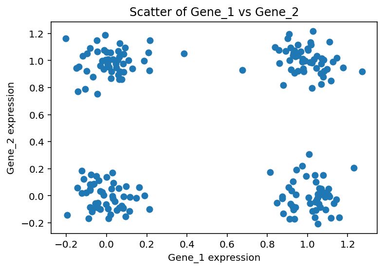
Perform PCA on this data
from sklearn.decomposition import PCAimport matplotlib.pyplot as plt# Apply PCApca = PCA()pcs = pca.fit_transform(df)# Scatter plot of the first two principal componentsplt.figure()plt.scatter(pcs[:, 0], pcs[:, 1])plt.xlabel('PC1')plt.ylabel('PC2')plt.title('PCA on Synthetic Biological Dataset')plt.show()
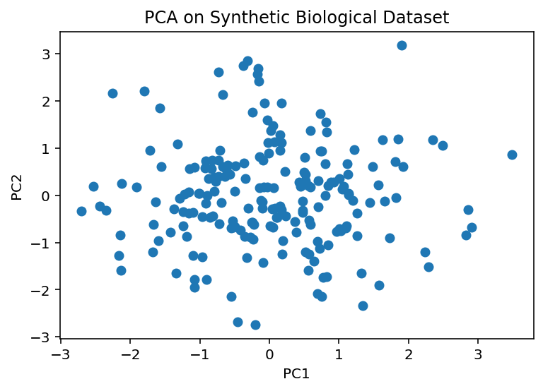
Let us try tSNE on this data
from sklearn.manifold import TSNEimport matplotlib.pyplot as plttsne = TSNE()tsne_results = tsne.fit_transform(df)# plotplt.figure()plt.scatter(tsne_results[:,0], tsne_results[:,1])plt.xlabel('t-SNE component 1')plt.ylabel('t-SNE component 2')plt.title('t-SNE on Synthetic Biological Dataset')plt.show()
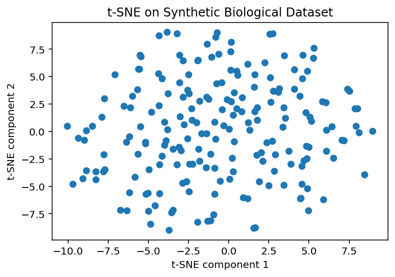
What if we try different values of perplexity?
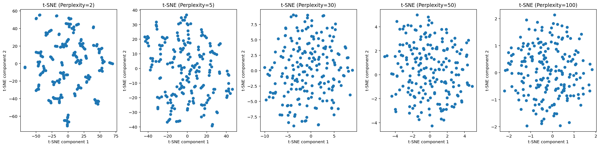
What if data has categorical features?
PCA may not work if you have categorical features
import pandas as pdimport numpy as npfrom sklearn.preprocessing import OneHotEncoderfrom sklearn.decomposition import PCAimport matplotlib.pyplot as plt# Generate synthetic data with categorical featuresnp.random.seed(42)n_samples =200# Categorical featuresspecies = np.random.choice(['mouse', 'rat', 'human'], size=n_samples)tissue = np.random.choice(['liver', 'brain', 'heart'], size=n_samples)condition = np.random.choice(['healthy', 'diseased'], size=n_samples)# Create DataFramedf_cat = pd.DataFrame({'species': species,'tissue': tissue,'condition': condition})print(df_cat.head())# One-hot encode the categorical featuresencoder = OneHotEncoder(sparse_output=False)encoded_data = encoder.fit_transform(df_cat)# Apply PCApca = PCA(n_components=2)pcs = pca.fit_transform(encoded_data)# Plot PCA resultplt.figure(figsize=(6,5))plt.scatter(pcs[:, 0], pcs[:, 1], alpha=0.7)plt.xlabel('PC1')plt.ylabel('PC2')plt.title('PCA on One-Hot Encoded Categorical Data')plt.grid(True)plt.tight_layout()plt.show()# Show the one-hot encoded feature namesencoded_feature_names = encoder.get_feature_names_out(df_cat.columns)encoded_df = pd.DataFrame(encoded_data, columns=encoded_feature_names)
species tissue condition
0 human liver diseased
1 mouse brain diseased
2 human liver diseased
3 human brain diseased
4 mouse brain healthy
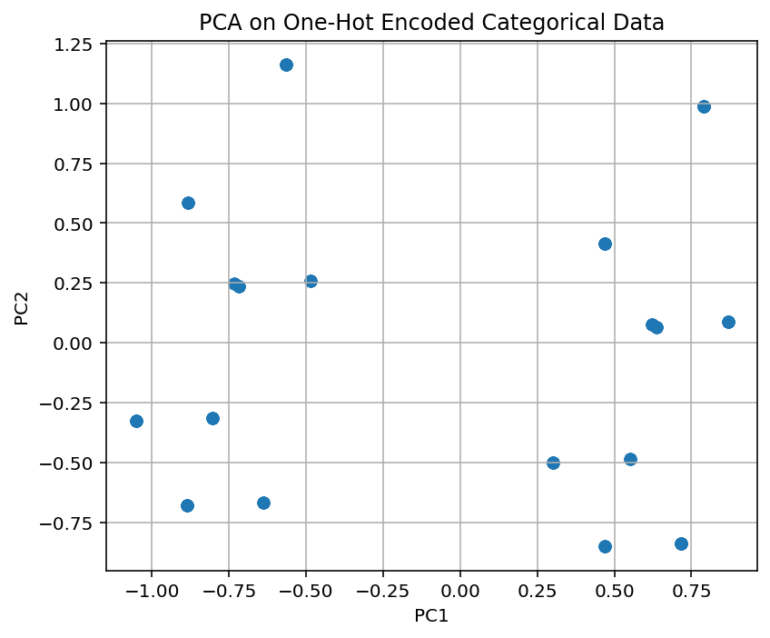
We can split by disease/healthy, etc.
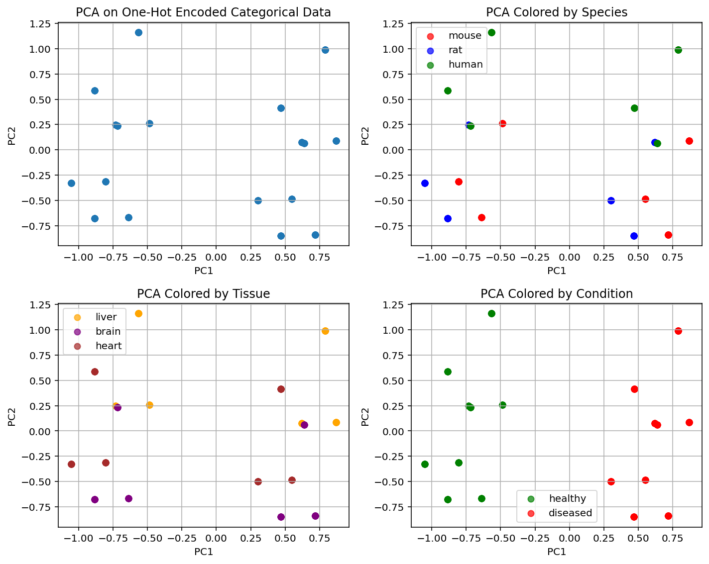
TODO: XX tSNE and color by tissue type
Hierarchical clustering
Leaves: Each leaf at the bottom of the dendrogram represents one sample from your dataset.
Branches: The branches connect the samples and groups of samples. The height of the branch represents the distance (dissimilarity) between the clusters being merged.
Height of Merges: Taller branches indicate that the clusters being merged are more dissimilar, while shorter branches indicate more similar clusters.
Clusters: By drawing a horizontal line across the dendrogram at a certain distance, you can define clusters. All samples below that line that are connected by branches form a cluster.
In the context of your one-hot encoded categorical data (species, tissue, condition), the dendrogram shows how samples are grouped based on their combinations of these categorical features.
Samples with the same or very similar combinations of categories will be closer together in the dendrogram and merge at lower distances.
The structure of the dendrogram reflects the relationships and similarities between the different combinations of species, tissue, and condition present in your synthetic dataset.
from scipy.cluster.hierarchy import dendrogram, linkagefrom matplotlib import pyplot as plt# Assume 'encoded_data' exists from the previous one-hot encoding steplinked = linkage(encoded_data, 'ward')# plot dendrogramplt.figure()dendrogram(linked, orientation='top', distance_sort='descending', show_leaf_counts=True)plt.title('Hierarchical Clustering Dendrogram on One-Hot Encoded Categorical Data')plt.xlabel('Sample Index')plt.ylabel('Distance')plt.show()
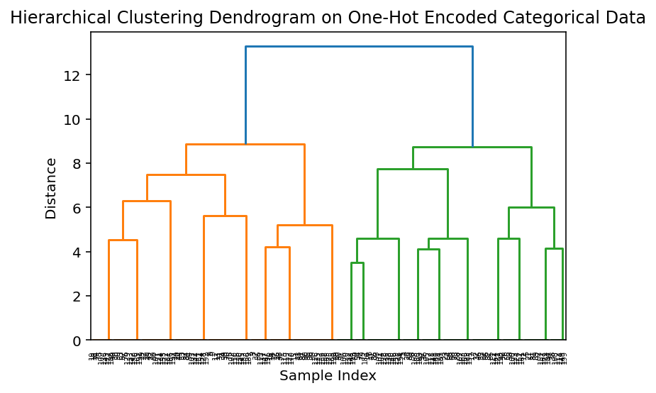
Heatmaps
Heatmaps are a great way to visualize data and clustering
import seaborn as snsimport matplotlib.pyplot as plt# Assume 'encoded_df' exists from the previous one-hot encoding stepplt.figure(figsize=(12, 8)) # Adjust figure size as neededsns.heatmap(encoded_df.T, cmap='viridis', cbar_kws={'label': 'Encoded Value (0 or 1)'}) # Transpose for features on y-axisplt.title('Heatmap of One-Hot Encoded Categorical Data')plt.xlabel('Sample Index')plt.ylabel('Encoded Feature')plt.tight_layout()plt.show()
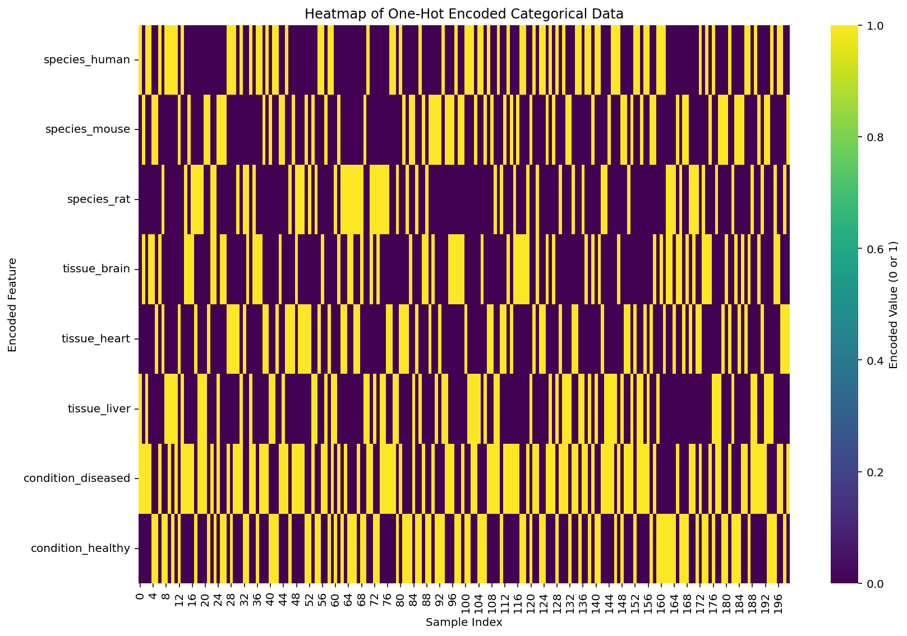
8.3 How to evaluate unsupervised learning methods
TODO: XX Potentially NC160 data exercise can live here
8.4 Exercises
Break up into small groups and work on any one of the following small projects.
8.4.1 Project using electronic healthcare records data
Exercise 1 - Electronic healthcare records data
Level:
For this exercise we will be using some data from hospital electronic healthcare records (EHR). No knowledge of biology/healthcare is required for this.
Answer
Project briefing
Here is a brief code snippet to help you load the data and get started.
You have to follow the following steps:
Data Loading and Preprocessing: Loading a diabetes dataset and normalizing numerical features.
Dimensionality Reduction: Applying PCA and t-SNE to reduce the dimensions of the data for visualization and analysis.
Clustering: Performing K-Means clustering on the reduced data to identify potential patient subgroups.
Visualization: Visualizing the data in lower dimensions and the identified clusters to gain insights.
# Histogramplt.figure()sns.histplot(df_normalized['Glucose'], bins=30)plt.title('Distribution of Normalized Glucose')plt.xlabel('Normalized Glucose')plt.ylabel('Frequency')plt.show()
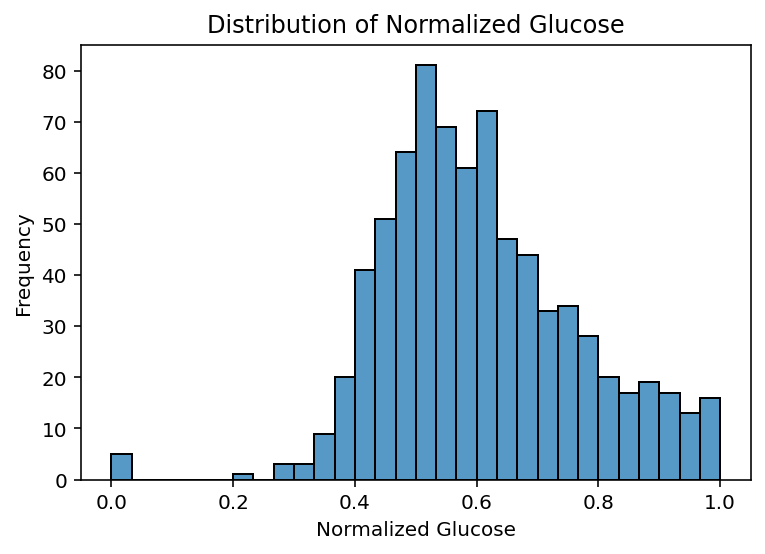
Now visualize the other variables? Do you notice anything interesting/weird about them?
Perform PCA
from sklearn.decomposition import PCAimport matplotlib.pyplot as pltimport seaborn as snsimport pandas as pd# Exclude the target column for PCAfeatures = df_normalized.drop(columns=['Outcome'])# Apply PCA# This is where you fill in your code .........
Fill in the rest of the code with your group members
Perform PCA and visualize it
Evaluation (how to interpret the PCA plots?)
In plt.scatter, the c parameter controls the marker colour (or colours).
the alpha parameter controls the transparency (opacity) of the markers.
When passing numbers, you must specify cmap (colour map) to control the gradient mapping (otherwise the default colourmap is used)
Let us colour by BMI now
# Visualize PCA results colored by BMIplt.figure()scatter = plt.scatter(pca_df['PC1'], pca_df['PC2'], c=df_normalized['BMI'], cmap='viridis', alpha=0.7)plt.colorbar(scatter, label='BMI (normalized)')plt.title('PCA of Diabetes Dataset - Coloured by BMI')plt.show()
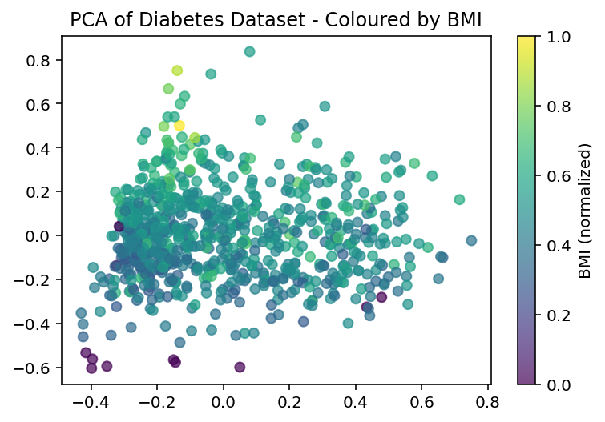
Do you see any patterns?
Now colour by Pregnancies
Try other features: Glucose, BloodPressure, SkinThickness, Insulin, DiabetesPedigreeFunction, Age
Try spotting any patterns and discuss this in your group
Recall: The primary goal is to uncover hidden patterns, structures, and relationships within the data.
This can lead to the generation of new hypotheses about the underlying phenomena, which can then be tested in follow-up studies using statistical methods or through the application of supervised machine learning techniques with labeled data.
Essentially, unsupervised learning helps us explore the data and formulate questions that can be further investigated.
However it is never the end of the data science pipeline but leads to more targetted investigations.
Now try tSNE on this data
from sklearn.manifold import TSNEimport matplotlib.pyplot as pltimport seaborn as snsimport pandas as pd# Exclude the target column for t-SNEfeatures = df_normalized.drop(columns=['Outcome'])# Apply t-SNE# This is where you fill in your code .........
Perform tSNE on this data
Vary the perplexity parameter
Now let us color the tSNE plot by BMI
# Exclude the target column for t-SNE# Already done (so commenting out)# features_for_tsne = df_normalized.drop(columns=['Outcome', 'Cluster'])# Apply t-SNEtsne = TSNE(n_components=2, random_state=42, perplexity=30)tsne_results = tsne.fit_transform(features)# Create a DataFrame for the t-SNE resultstsne_df = pd.DataFrame(data=tsne_results, columns=['TSNE1', 'TSNE2'])#tsne_df['Outcome'] = df_normalized['Outcome'].values#tsne_df['Cluster'] = df_normalized['Cluster'].values# Visualize t-SNE colored by BMIplt.figure(figsize=(10, 8))scatter = plt.scatter(tsne_df['TSNE1'], tsne_df['TSNE2'], c=df_normalized['BMI'], cmap='viridis', alpha=0.7, s=50)plt.colorbar(scatter, label='BMI (normalized)')plt.title('t-SNE of Diabetes Dataset - Colored by BMI')plt.xlabel('t-SNE Component 1')plt.ylabel('t-SNE Component 2')plt.show()
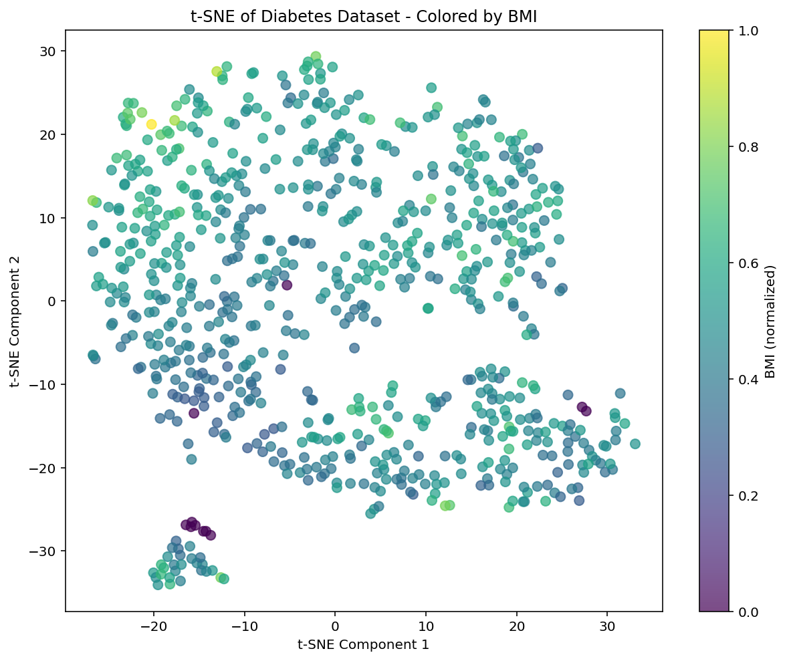
Now colour the tSNE plot by some other feature. Try Glucose, BloodPressure, SkinThickness, Insulin, DiabetesPedigreeFunction, Age
Do you observe any patterns? Discuss in your group.
Perform hierarchical clustering on this data
import pandas as pdfrom scipy.cluster.hierarchy import linkage, dendrogram, fclusterimport matplotlib.pyplot as pltimport seaborn as sns# Exclude the target column for clusteringfeatures = df_normalized.drop(columns=['Outcome'])# Perform hierarchical clustering# This is where you fill in your code .........
Plot heatmaps (heatmaps are a great way to visualize your data)
# Plot a heatmap of the normalized feature values for all samplesplt.figure()sns.heatmap(features, cmap='viridis', cbar=True)plt.title('Heatmap of Normalized Feature Values (All Samples)')plt.xlabel('Features')plt.ylabel('Sample Index')plt.show()
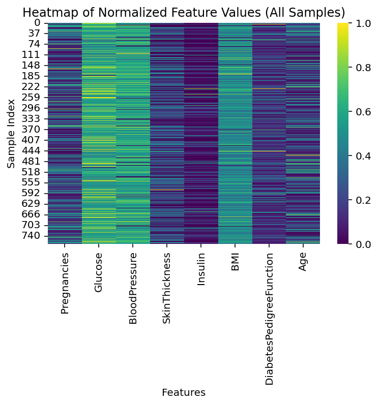
Perform k-means on this data.
Discuss in your group the outcome of this project.
What are your key findings?
Do you think we can find partitions of patients/clusters of patients?
What can you do with these partitions?
Hint
Work in a group!
8.4.2 Project using single-cell sequencing data
Exercise 2 - Single-cell sequencing
Level:
For this exercise we will be using some single-cell sequencing data. No biological expertise is required for this.
Answer
Exercise
Here is a brief code snippet to help you load the data and get started.
You have to follow the following steps:
Data Loading and Preprocessing: Loading a single-cell sequencing dataset and normalizing features.
import scanpy as scimport pandas as pdimport numpy as npimport matplotlib.pyplot as pltfrom sklearn.decomposition import PCAfrom sklearn.manifold import TSNE
Load and Preprocess Data: It loads the pbmc3k dataset using scanpy, normalizes the total counts per cell to 10,000, and then applies a log transformation. It then picks out a few “marker” genes (genes that may be important for the disease based on our prior knowledge).
The single cell data is just a table of numbers: the rows are different cells, the columns are genes measured in those cells.
# 1. Load data and preprocessadata = sc.datasets.pbmc3k()sc.pp.normalize_total(adata, target_sum=1e4)sc.pp.log1p(adata)# 2. Subset to marker genesmarker_genes = ['CD3D','CD3E','CD4','CD8A','CD14','LYZ','MS4A1','GNLY','NKG7']genes = [g for g in marker_genes if g in adata.var_names]expr = pd.DataFrame( adata[:, genes].X.toarray(), index=adata.obs_names, columns=genes)print(expr.head())
We now have a table of numbers: the rows are cells, and columns are genes measured in those cells.
Now perform PCA on this data (Hint: expr.values has all the values. Perform PCA on this.)
Now colour this PCA plot by one marker gene CD3D. The CD3D gene is crucial for immune response. Mutations in this gene can lead to disease. Hint: expr["CD3D"] will get you all the values of the gene. Use that in the c = option in plt.scatter().
Discuss in your group: what do you think the plot means?
Now try the other marker genes: CD3E,CD4,CD8A, CD14, LYZ, MS4A1, GNLY, NKG7
Discuss in your group: what do you think the plot means?
Now perform tSNE on this. Hint: expr.values has all the values. Perform tSNE on this.
Now colour this PCA plot by one marker gene CD3D. Hint: expr["CD3D"] will get you all the values of the gene. Use that in the c = option in plt.scatter().
Discuss in your group: what do you think the plot means?
Now try the other marker genes: CD3E,CD4,CD8A, CD14, LYZ, MS4A1, GNLY, NKG7
Discuss in your group: what do you think the plot means?
Reminder: tSNE is stochastic.
Run tSNE again. Do the clusters remain the same? Can you see the same patterns?
Run tSNE with a different perplexity value. Do the clusters remain the same?
Discuss in your group your key findings. What can you say about these clusters?
Now perform hierarchical clustering on this data.
Try a few distance functions and linkage functions.
Plot heatmaps or clustermaps (Hint: seaborn clustermap does both dendrograms + heatmap in one shot). A representative plot is shown below. Can you try to get a plot similar to this?
Hint: Here is some code to get you started
Hint
from scipy.cluster.hierarchy import linkagefrom scipy.spatial.distance import pdistimport matplotlib.pyplot as pltimport seaborn as sns# compute linkagecell_link = linkage( pdist(expr.T, metric="euclidean"), method="ward" )gene_link = linkage( pdist(expr, metric="euclidean"), method="ward" )# seaborn clustermap does both dendrograms + heatmap in one shot# Fill in the code below .......sns.clustermap(.......)
TODO: XX refine and introduce sns.clustermap elsewhere also
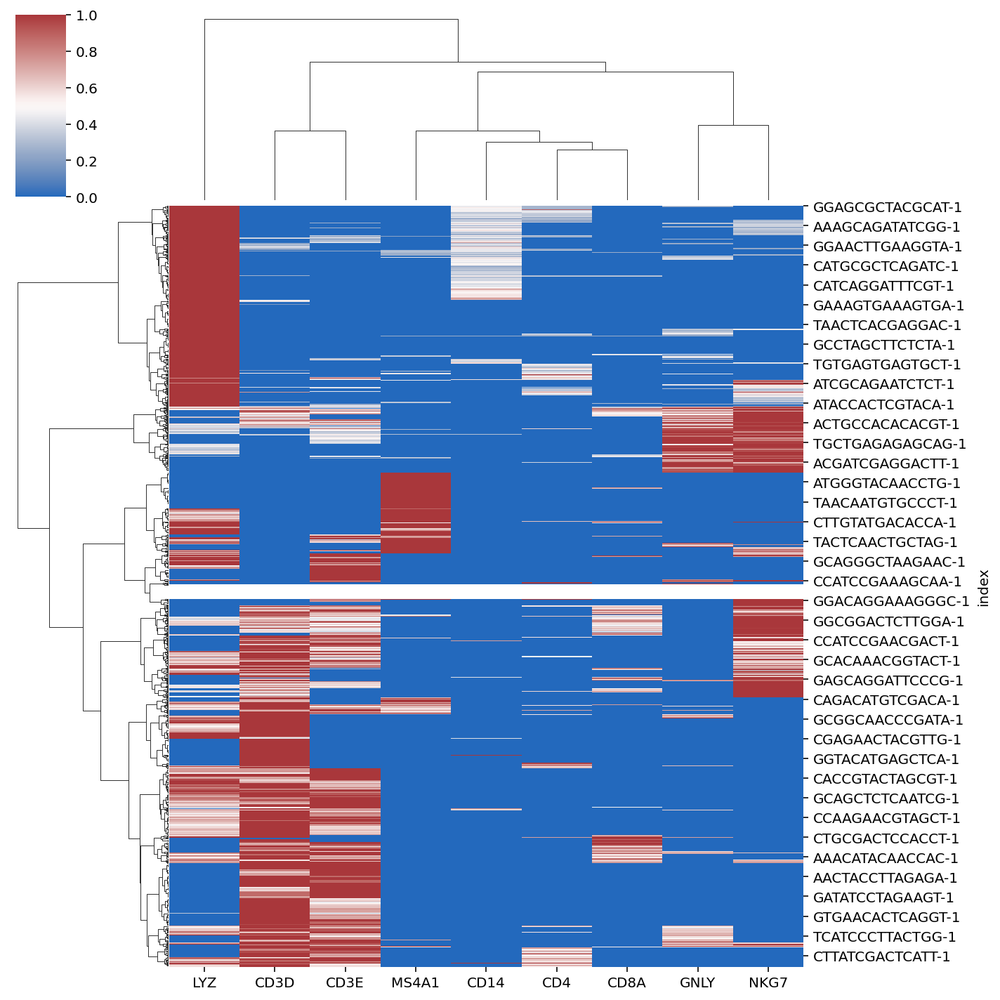
Perform k-means on this data.
Discuss in your group the outcome of this project.
What are your key findings?
Do you think we can find partitions of cells/clusters of cells?
What can you do with these partitions?
Hint
Work in a group!
8.4.3 Project using GapMinder data
Exercise 3 - GapMinder data
Level:
For this exercise we will be using sociological data.
Answer
Exercise
Here is a brief code snippet to help you load the data and get started.